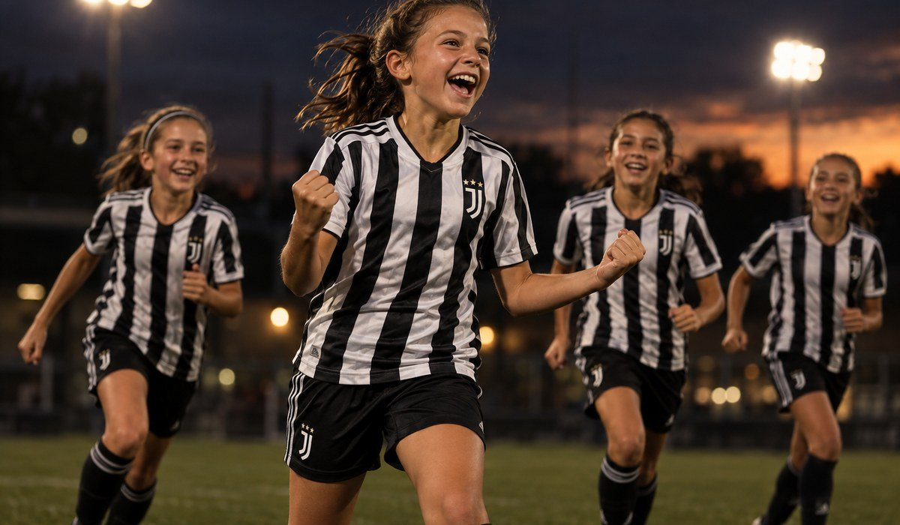

|
Hi Maria, In 9 days, Juventus Academy coaches from Italy will be on the field at Olympic Park in Schaumburg. If you want your player there, this is the time to register. ✓ Two days of training with official Juventus Academy coaches
✓ Small groups: one coach for every 12 to 15 players
✓ Standout players are noted for future opportunities, like the Juventus Training Experience in Italy |
Registration is $225 for both days. 📅 Saturday and Sunday, November 14–15 · 10 AM–2 PM
📍 Olympic Park, 1675 Old Schaumburg Rd, Schaumburg, IL 60173
⚽ Boys and girls 6–16, players and goalkeepers |

|